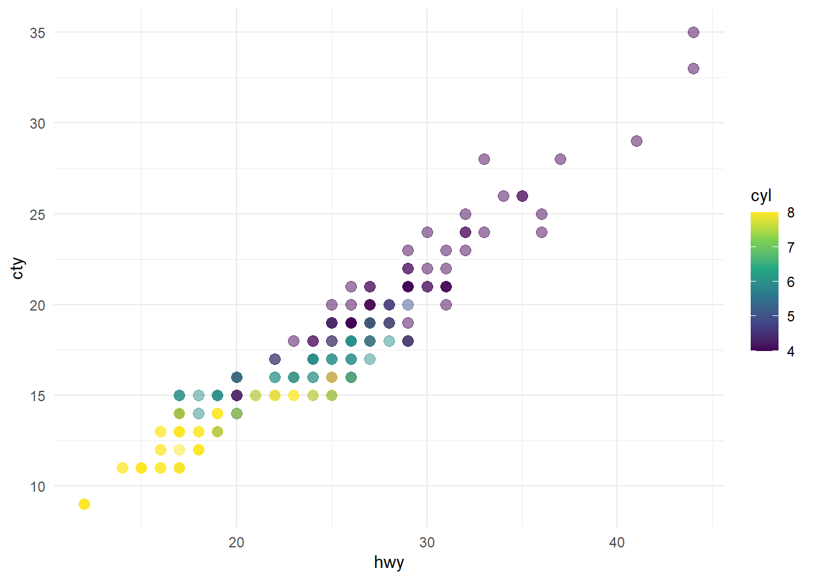
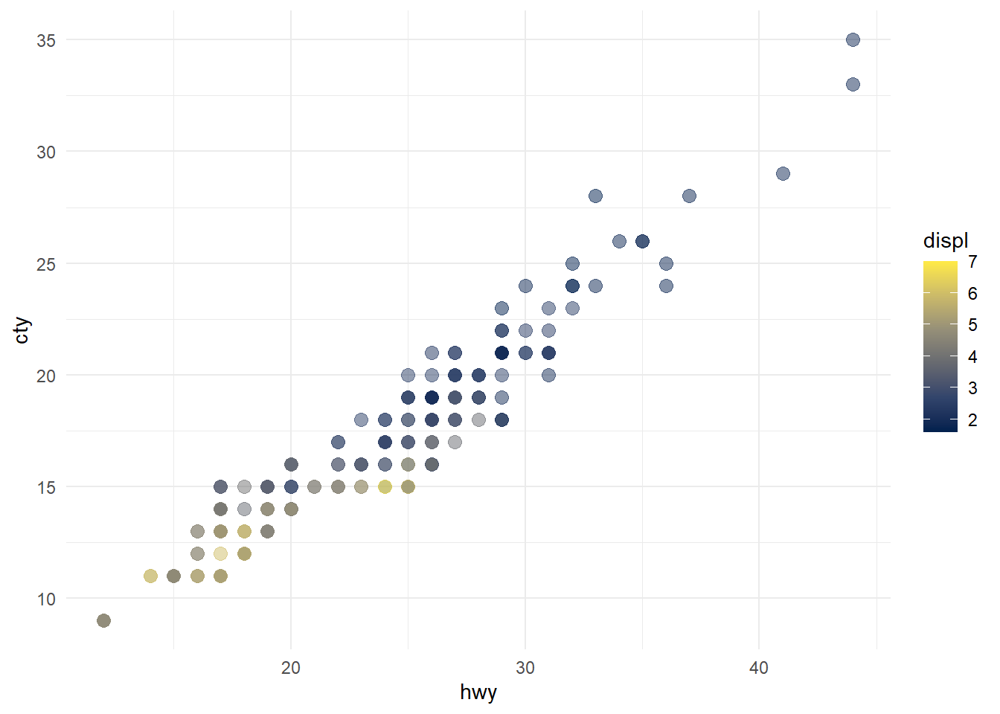

---
title: "Hello, Quarto"
format: html
editor:visual
---Creating documents in R - Quarto
Quarto is a multi-language version of R Markdown (a file format for making dynamic documents with R) that allows you to easily create and render different types of documents in R, such as PDFs, .doc and .html files. Quarto files are saved with the extension .qmd. Quarto enables the usage of code blocks in the rendering that allows you to create fully reproducible documents by including links to the actual data and the code used to produce the output analyses or plots.
This page is based in the tutorials available on the official Quarto website. Access that page for a more detailed tutorial.
Download this Quarto document, open it in RStudio, and click on the  Render button.
Render button.
RStudio offers two ways of viewing and working with .qmd files: Source and Visual editors. In the Visual editor you see the file more similar to the way it will be rendered and can use the toolbar to format its content, whereas in the Source editor, you can edit the source code directly.
Rendering
Use the  Render button in RStudio to render the file and preview the output with a single click. You can also use a keyboard shortcut (Ctrl + Shift + K in Windows or ⇧⌘K an Mac OS).
Render button in RStudio to render the file and preview the output with a single click. You can also use a keyboard shortcut (Ctrl + Shift + K in Windows or ⇧⌘K an Mac OS).
When rendering, Quarto creates a new file that contains selected text, code, and results from the .qmd file. That file can be in many formats, including HTML and PDF.
Open the file you just downloaded to explore its contents.
Parts of a .qmd file
Most of a Quarto file can be made of simple text, including formatting using Markdown notation. However, the power of Quarto comes from incorporating code in different languages that can transform the final document. Among those, we can cite the YAML header and code chunks in the text.
YAML header
An optional YAML header is defined by three dashes (—) on both ends.
In the rendered document, the title will appear at its top with a larger font size than the rest of the document. The format command denotes the format of the final document (in the example above, html, but it can be PDF or doc, for example). For each of those formats, there are several other YAML fields that can be added to the header (editor in the example denotes that the output should be open in the visual editor by default), such as author, subtitle, date, theme, and fontcolor.
Code chunks
Code chunks in a Quarto file can be used for many purposes, such as plotting figures or creating tables. Quarto accepts different programming languages in such chunks, for example python and, most important for our course, R. Code chunks are denote by three backticks (`) on both ends.
R code chunks are identified by {r} with optional options, in YAML style, identified by #| at the beginning of the line.
```{r}
#| label: load-packages
#| include: false
library(tidyverse)
library(palmerpenguins)
```In this case, the label of the chunk is load-packages and we set include to false to indicate that we do not want the chunk itself or any of its outputs in the rendered document. There are many other options that can be used to tailor code chunks. For example, by default the code and its output are displayed within the rendered document, but setting echo and output to false omits both the commands and results from the document. Here are two examples, first including the source code:
library(ggplot2)
ggplot(mpg, aes(x = hwy, y = cty, color = cyl)) +
geom_point(alpha = 0.5, size = 2) +
scale_color_viridis_c() +
theme_minimal()
And omitting it:

It is also possible to improve the appearance and accessibility of plots in the rendered file, by changing its dimensions, providing a caption, or adding alternative texts. We can also add multiple figures in the same plot. Let’s add the following chunk options and a second figure to our previous plot and compare the differences:
```{r}
#| label: fig-scatterplot
#| fig-cap: "City and highway mileage for 38 popular models of cars."
#| fig-alt: "The plots in @fig-mpg show the relationship between city and highway mileage for 38 popular models of cars. In @fig-mpg-1 the points are colored by the number of cylinders while in @fig-mpg-2 the points are colored by engine displacement."
#| fig-subcap:
#| - "Color by number of cylinders"
#| - "Color by engine displacement, in liters"
#| layout-ncol: 2
#| fig-height: 5
#| echo: false
```


PDFs
In order to create PDFs using Quarto you will need to install a recent distribution of LaTeX. TinyTeX is commonly recommended and can be installed in the RStudio Terminal using:
quarto install tinytexIn order to explore different option to create a PDF you can download the file authoring.qmd. After installing a LaTeX distribution you should be able to render it and create a PDF document with the results. In the third Quarto tutorial you can find out about additional elements of a document, such as creating cross references or citations.